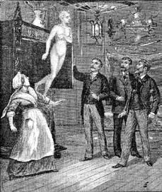
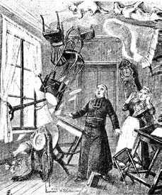
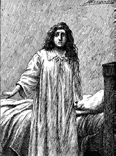

17 Nisan 1897
Sevgili Yüzbaşı,
son sayfalarınız inanılmaz miktarda olayı bir araya getiriyor; aşikâr olan şu ki, siz o olayları yaşarken ben başkalarını yaşıyordum. Gene apaçık belli olan bir şey daha var ki, siz (tabii Taxil ve Bataille'ın koparttıkları gürültü yüzünden) benim çevremde olup biten her şeyden haberdardınız ve belki de benim bir araya toparlayabildiğimden daha fazlasını hatırlıyorsunuzdur.
Şimdi 1897 Nisanı'ndaysak, benim Taxil ve Diana ile öyküm on iki yıl kadar sürdü ve bu yıllar içersinde çok şey yaşandı demektir. Söz gelişi, Boullan'ı ne zaman yok ettik?
Le Diable'ın yayınına başlamamızdan bir yıl kadar sonra olsa gerek. Boullan bir akşam altüst olmuş durumda Auteuil'e geldi, elindeki mendille hiç durmadan beyaz bir köpüğün oluştuğu dudaklarını kuruluyordu.
"Ölüyorum ben" dedi, "beni öldürüyorlar."
Doktor Bataille sert bir kadeh içkinin onu toparlayacağını düşündü; Boullan bunu kabul etti, sonra kırık dökük sözlerle bize büyü ve büyücülük dolu bir öykü anlatmaya başladı.
Stanislas de Guaita ve onun kabalistik Gül Haç cemiyetini ve sonradan Katolik Gül Haç cemiyetini kurmuş olan aykırı ruh Josephin Péladan ile berbat ilişkilerinden –Le Diable dergisi bu ikisiyle ilgilenmişti tabii ki– daha önce söz etmişti. Bence Péladan'ın Gül Haç'çılarıyla Boullan'ın başpapazı olduğu Vintras tarikatı arasında pek az fark vardı; üzerinde kabalistik işaretler olan uzun giysilerle dolaşan insanların Kadiri Mutlak Tanrı'dan mı yoksa Şeytan'dan mı yana oldukları pek anlaşılmıyordu ama belki de bu nedenle Boullan'ın, Péladan'ın çevresiyle arası yoktu. Aynı topraklarda eşeleniyorlar, aynı yitik ruhları baştan çıkarmaya uğraşıyorlardı.
Guaita'nın sadık dostları onu, Lullo ve Paracelsus'a, ak ve kara büyüde üstadı Eliphas Levi'ye ait beş köşeli yıldızlarla süslü el yazması grimoire'lar ve ender bulunan başka hermetik yapıtlar toplayan seçkin bir beyefendi olarak (bir marki idi) tanıtıyorlardı. Söylentilere göre, günlerini Trudaine Caddesi'ndeki minik zemin kat dairesinde geçiriyor, burada yalnızca okült ilimlerle ilgilenen kişileri kabul ediyor ve bazen haftalarca evden çıkmadığı oluyordu. Ama bazı başka kişilere göre de o odalarda bir dolaba kapattığı, alkol ve morfine doyurduğu bir hayaletle mücadele ediyor, sinir krizlerinin yarattığı gölgelere can veriyordu.

...bir dolaba kapattığı, alkol ve morfine doyurduğu bir hayaletle mücadele ediyor, sinir krizlerinin yarattığı gölgelere can veriyordu.
Şom konularla uğraştığını kendi yazdığı ve Boullan'ın Lusiferin ya da Lusiferyan, Satanik ya da Satanesk, Şeytani ya da Şeytansı izlerini ifşa ettiği Lanetli bilimler üzerine denemeler kitabında dile getiriyor ve Boullan'ı "zinayı dinsel ayin haline getiren" bir sapık olarak tanımlıyordu.
Öykü eskiydi; 1887'den beri Guaita ve çevresindekiler bir "inisyatik mahkeme" toplayarak Boullan'ı mahkûm ettiler. Bu ahlaki bir hüküm müydü? Boullan uzun süredir bunun fiziksel bir mahkûmiyet olduğunu ve sürekli Guaita ve ötekilerin, çok uzaklardan da olsa ona attıkları elle tutulup gözle görülmeyen kargılarca saldırıya uğradığını, sarsıldığını, okült sıvılarca yaralandığını iddia ediyordu.

...sürekli Guaita ve ötekilerin, çok uzaklardan da olsa ona attıkları elle tutulup gözle görülmeyen kargılarca saldırıya uğradığını, sarsıldığını, okült sıvılarca yaralandığını iddia ediyordu.
Ve Boullan son günlerini yaşadığına inanıyordu.
"Her akşam uykuya daldığımda darbeler, yumruklar, tokatlar yediğimi hissediyorum; inanın bana bu sağlıksız duyularımın yanılsaması değil, inanın bana, çünkü aynı anda kedimi de elektrik çarpmış gibi bir titreme alıyor. Biliyorum, Guaita balmumundan bir bebek yapmış, buna iğneler batırdığında ben son derece keskin acılar hissediyorum. Büyüsünü köreltmek için ben de bir karşı-büyü yapmayı denedim ama Guaita pusuyu fark etti ve bu sanatta benden iyi olduğu için daha etkili bir büyüyle çıktı karşıma. Gözlerim kararıyor, soluğum ağırlaşıyor, daha kaç saat yaşayabilirim, bilmiyorum."
Bize gerçeği anlatıp anlatmadığından emin değildik ama önemli olan bu değildi zaten. Zavallının durumu gerçekten iyi değildi. Taxil her zamanki dâhiyane fikirlerinden birini atmıştı ortaya: "Ölmüş gibi yapın" demişti, "güvendiğiniz kişiler tarafından Paris yolculuğu sırasında öldüğünüz haberini duyurun; Lyon'a bir daha dönmeyin. Şehirde sığınacağınız bir yer bulun, sakalınızı ve bıyığınızı kesin ve tipinizi değiştirin. Diana gibi yeni bir kimlikle uyanın ama Diana'dan farklı olarak burada kalın. Guaita ve arkadaşları öldüğünüzü düşünecekler ve size ıstırap vermekten vazgeçeceklerdir."
"Peki ama Lyon'a dönmezsem, nasıl yaşarım?"
"En azından ortalık yatışana ve hasımlarınızın maskesi düşene kadar Auteil'de bizimle yaşarsınız. Diana yardıma muhtaç ve siz gelip geçen bir ziyaretçiden çok daimi olarak burada kalırsanız, ona çok yardımınız dokunacaktır."
"Ama" diye eklemişti Taxil, "güvendiğiniz dostlarınız varsa, ölüm haberinizi yaymadan önce onlara böyle bir olasılıktan söz eden mektup yazın ve Guaita ile Péladan'ı açıkça suçlayın. Böyle olunca avunmak bilmeyen izdeşleriniz katillerinize karşı bir kampanya başlatabilirler."
Öyle de olmuştu. Bu numaradan haberi olan tek kişi, Boullan'ın asistanı, rahibesi, sırdaşı –ve belki daha fazlası– olan Madame Thibault idi; Parisli arkadaşlarına dostunun nasıl can çekiştiğini dokunaklı bir dille anlatmıştı; Lyonlu dostlarına nasıl duyurduğunu bilmiyorum, belki de boş bir tabutun gömülmesini bile sağlamış olabilir. Kadın kısa bir süre sonra Boullan'ın haklarını savunmayı sürdüren bir arkadaşının –Huysmans adındaki bu kişi revaçta bir yazardı– yanında kâhya olarak işe girdi; Auteil'de olmadığım bazı akşamlar, gelip eski suç ortağını ziyaret ediyordu herhalde.
Ölüm haberi üzerine, gazeteci Jules Bois Gil Blas dergisinde Guaita'ya saldırmış, onu büyücülükle, Boullan'ı öldürmekle suçlamıştı; Huysmans, Figaro'ya verdiği röportajında Guaita'nın büyülerini ve nasıl etki ettiğini inceden inceye anlatmıştı. Gene Gil Blas'da Bois suçlamalarını sürdürüyor, karaciğer ile kalbin Guaita'nın akışkan kargılarına maruz kalıp kalmadığını anlamak için cesede otopsi yapılmasını istiyor, yargısal bir soruşturma başlatılmasını öneriyordu.
Guaita ise Gil Blas dergisinde cinai kudretini ironi konusu yaparak ("evet, ben en ince zehirleri cehennem sanatıyla işliyorum, onları uçucu hale getirerek toksik buharı çok uzaklardan sevmediğim kişilerin burun deliklerine dolduruyorum; ben önümüzdeki yüzyılın Gilles de Rais'iyim") hem Huysmans'ı hem Bois'yı düelloya davet ediyordu.
Bataille, onca büyü gücüyle her iki tarafın da birbirini yok edemediğini gözlemleyerek içten içe gülüyordu ama bir Tolosa gazetesinin haberine göre büyüyü tutturan biri olmuştu: Bois'yı düelloya taşıyan arabanın atlarından biri hiç nedensiz yere yıkılmıştı, at değiştirilmiş, ikincisi de yere serilmişti; araba devrilmiş ve Bois onurunu koruyacağı düello alanına yara bere içinde varmıştı. Üstelik sonradan tabancasının kurşunlarından birinin doğaüstü bir güç nedeniyle silahın içine sıkıştığını da söylemişti.
Boullan'ın arkadaşları gazetelere uçurdukları haberlerde Péladan'ın Gül Haç üyelerinin Notre Dame'da bir ayin düzenlediklerini ama yücelme anında hançerlerini sunak masasına doğru salladıklarını anlatmışlardı. İster inanın, ister inanmayın. Le Diable'a göre bunlar palavra haberlerdi ve okurların alışmış oldukları öteki haberlerden daha da inanılmazdı. Ama işi fazla uzatmadan Boullan'ı mezardan çıkarmak gerekiyordu.
"Siz öldünüz" demişti Bataille ona, "ve bu ölüme ilişkin söylenenler artık sizi ilgilendirmemeli. Öte yandan günün birinde yeniden ortaya çıkmanız gerekirse biz, sizin çevrenizde işinize çok yarayacak bir gizem havası yaratırız."
Boullan bunu kabul etmişti ve belki de narsistik duygularıyla Bataille'ın onun okült işleri konusunda uydurduklarını okumaktan hoşlanıyordu. Aslında kendini tamamen Diana'ya kaptırmış durumdaydı. Hastalıklı bir takıntıyla yapışmıştı ona; sanki yeterince gerçekliğin dışında yaşamıyormuş gibi şimdi de kendini fena halde onun anlattığı hayallere kaptırmıştı.
* * *
Sonradan olanları çok güzel anlatmışsınız. Katolik dünyası ikiye bölünmüştü ve taraflardan biri Diana Vaughan'ın varlığına kuşkuyla yaklaşmaya başlamıştı. Hacks ihanet etmişti, Taxil'in kurduğu kale yıkılmak üzereydi. Artık hasımlarımızın ve aynı zamanda sizin anımsadığınız pek çok Diana taklitçisinin yarattığı patırtının altında eziliyorduk. Fazla zorladığımızı hissediyorduk, İtalyan hükümetinin başındaki adamla kutlama yapan üç başlı bir şeytan düşüncesini sindirmek kolay değildi.
Peder Bergamaschi ile yaptığım birkaç buluşma sonunda her ne kadar Civiltà Cattolica'nın Romalı Cizvitleri Diana davasını bir kez daha desteklemeye karar vermiş olsalar da Fransız Cizvitlerin (adını andığınız Peder Portalié'nin makalesine bakın) bu olayı tarihe gömmeye karar verdiklerine ikna olmuştum. Hébuterne ile yaptığım bir başka kısa görüşme sonucunda masonların bu komedinin bitmesi için can attıklarını anladım. Katoliklere göre hiyerarşinin saygınlığını bir kez daha lekelememek için olay sessizce sona erdirilmeli; masonlara göre ise bu yadsıma daha gürültülü patırtılı gerçekleştirilmeliydi ve Taxil'in bunca yıldır yürüttüğü masonluk karşıtı propagandanın ciddi bir alçaklık olduğu zihinlere kazınmalıydı.
Bir gün aynı anda iki ileti birden aldım. Birini yollayan Peder Bergamaschi şöyle diyordu: "Taxil'e olayı tamamen kapatması için elli bin frank önermeniz konusunda size yetki veriyorum. Kardeşlik duygularımla, Xto, Bergamaschi." Öteki ileti ise Hébuterne'den geliyordu: "Bitirelim artık. Kamuoyuna her şeyi kendi uydurduğunu açıklaması karşısında ona yüz bin frank önerin."
İki taraftan sıkıştırılmıştım, para elime geçer geçmez işe koyulmaktan başka çarem yoktu.
Hacks'ın yok olması işimi kolaylaştırmıştı. Tek yapmam gereken Taxil'i itirafa, ihtidaya yöneltmekti. Olayın başında olduğu üzere, elimde gene yüz elli bin frank vardı ve yetmiş beş bini yeterdi ona, çünkü elimde paradan daha ikna edici konular vardı.
"Taxil, Hacks'ı ortadan kaldırdık ve Diana'yı kamuoyunun karşısına çıkarmak kolay olmayacak. Ben onu da nasıl yok edeceğimizi düşüneceğim. Ama beni asıl kaygılandıran kişi sizsiniz: İşittiğim söylentilere göre masonlar sizinle hesabı kapamaya karar vermişler ve onların intikamlarını nasıl kanlı aldıklarını siz bizzat yazmıştınız. Önceleri Katolik kamuoyu sizi koruyabilirdi ama şimdi Cizvitlerin bile saklanmaya başladıklarını görüyorsunuz. Ama şimdi olağanüstü bir fırsat çıktı karşınıza: Bir loca –hangisi olduğunu sormayın, çünkü son derece gizli bir durum söz konusu– her şeyin bir oyun olduğunu kaleme almanız karşılığında size yetmiş beş bin frank verecek. Masonluğun bundan nasıl bir yarar elde edeceğini anlıyorsunuz herhalde: Üzerlerine attığınız pislikten temizlenecekler ve bunu yutmuş olan Katolikler pislenecekler bu sefer. Size gelince, bu müthiş açıklamayla yaratacağınız reklam sayesinde Katolikler arasında gittikçe daha az satmaya başlayan yapıtlarınız, öncekilerden daha çok satacak. Kilise karşıtı ve mason okuru yeniden fethedeceksiniz. İşinize geleceğini düşünüyorum."
Fazla ısrar etmeme gerek kalmamıştı: Taxil soytarının tekidir ve yeni bir soytarılıkla ortaya çıkmak şimdiden gözlerini parlatmıştı...
"Bakın sevgili peder, ben bir salon kiralarım ve basına Diana Vaughan'ın şu gün orada ortaya çıkacağını bildiririm; o gelir ve kamuoyuna Lusifer'in izniyle çektiği iblis Asmodeus'un fotoğrafını gösterir! Bir afişle, seyirciler arasında çekilecek kurayla, 400 frank değerinde bir yazı makinesi verileceğini duyuralım; bu çekilişi yapmaya gerek kalmayacak, çünkü ben ortaya çıkacağım ve Diana diye birinin olmadığını söyleyeceğim – tabii o yoksa, yazı makinesi de yok anlamına gelir bu. Sahneyi şimdiden görür gibi oluyorum: Bütün gazetelerin birinci sayfasında boy göstereceğim. Şahane olacak. Olayı iyi hazırlamam için bana zaman ve mümkünse masraflar için şu yetmiş beş bin franktan biraz da avans verin..."
Taxil ertesi gün amaca uygun bir salon bulmuştu; Societé de Geographié'ye ait salon sadece Paskalya haftasının pazartesi günü boş olabilecekti. Şöyle söylediğimi anımsıyorum: "Demek ki önümüzde bir ay daha var. Bu arada lütfen ortalıkta görünmeyin ve başka söylentilere yol açmayın. Ben de bu arada Diana ile ne yapacağıma kafa yorayım."
Taxil bir an tereddütte kalmıştı; dudaklarıyla birlikte bıyıkları da titrerken şöyle demişti: "Umarım... Diana'yı ortadan kaldırmazsınız."
"Saçmalamayın" demiştim ona, "benim bir din adamı olduğumu unutmayın. Onu aldığım yere geri götüreceğim."
Diana'dan ayrılma düşüncesi onu sarsmış gibi geldi ama masonların alacağı intikamın korkusu, Diana'ya duyduğu ya da duymuş olduğu arzuyu bastırdı. Şarlatan olmanın yanı sıra ödleğin de tekidir. Evet, Diana'yı ortadan kaldırmaya niyetliyim, deseydim nasıl bir tepki verirdi acaba? Belki de masonların korkusundan bunu da kabul edebilirdi. Yeter ki cinayeti o işlemesin.
Paskalya pazartesisi ayın 19'una geliyor. Taxil ile vedalaşırken bir aylık bir bekleme söz konusu idiyse, demek ki biz 19 ya da 20 Mart'ta görüşmüş olmalıyız. Bugün 17 Nisan. Son on yılın olaylarını birer birer gözden geçirerek bir ay öncesine kadar gelmişim. Bu günce şu andaki şaşkınlığımın nedenini çözme konusunda sizin olduğu kadar benim de işime yarayacak desek de, ben henüz hiçbir şeyi çözebilmiş değilim. Ya da belki bu en can alıcı olay şu son otuz günde gerçekleşti.
Şimdi sanki daha fazlasını anımsamaktan korkar gibiyim.
18 Nisan, şafak vakti
Taxil evin içinde kudurmuş gibi dört dönerken, Diana neler olup bittiğinin farkında değildi. İki durum arasındaki dönüşümü, gizli toplantılarımızı fal taşı gibi açtığı gözlerle izliyorsa da bir insan ya da mekân adı zihninde soluk bir lamba yaktığında kendine gelir gibi oluyordu.
Giderek daha çok bir bitkiye dönüşüyordu, tek hayvansal belirtisi, Taxil'e, aramızda olduğu zamanlarda Bataille'a, Boullan'a ve buna yol açmamaya çalışsam da bana yönelttiği ve giderek daha heyecanlı bir hal alan duyarlılığıydı.
Diana bizim aramıza girdiğinde yirmili yaşlarının başındaydı; şimdi ise otuz beşini geçmişti. Şehvetli gülümsemesi yüzünden silinmeyen Taxil'e göre, otuz yaşını geçmiş bir kadın hâlâ arzu edilir haldeyse bu onun olgunlaştıkça daha çekici olduğunu gösteriyordu. Belki de bitkisellik düzeyindeki canlılığının bakışlarına yansıttığı boşluk, ona gizemli gibi görünüyordu.
Ama bunlar benim uzmanlık alanıma girmeyen sapıklıklardır. Tanrım, bizim için zavallı bir inceleme nesnesi olması gereken bu kadının tenselliği üzerinde neden bu kadar çok duruyorum?
* * *
Diana neler olup bittiğinin farkında değildi dedim. Yanılıyor olabilirim: Mart ayında belki de artık Taxil'i de Bataille'ı görmediğinden coşkunlaşmıştı. Bir histeri krizi içindeydi; şeytan (öyle söylüyordu) onu vahşice rahatsız ediyor, yaralıyor, ısırıyor, bacaklarını büküyor, yüzünü tokatlıyordu – ve bana gözlerinin çevresindeki morluğu gösteriyordu. Ayalarında, İsa Peygamber'in ayalarında çarmıha çivilenmesi sonucu belirenleri andıran yaralardan çıkıyordu. Cehennem güçlerinin onun gibi bir Lusifer müridi Paladist'e neden böyle acımasız davrandığını merak ediyordu ve yardım istercesine cüppeme yapışıp duruyordu.
Büyü işlerinden benden daha iyi anlayan Boullan'ı düşündüm. Gerçekten de onu çağırır çağırmaz Diana koluna yapıştı ve titremeye başladı. Boullan elini onun ensesine koydu, tatlı tatlı konuşarak onu yatıştırdı ve sonra ağzının içine tükürdü.
"Kızım" dedi ona, "sana bu zulmü yapanın Efendi Lusifer olduğunu kim söylüyor? Senin Paladist inancını küçümsemek ve cezalandırmak için düşmanın, düşmanların en büyüğü yani Hıristiyanların İsa adını verdikleri insan görünümündeki varlık ya da onun sözde azizlerinden biri olmasın?"
"Ama Rahip Efendi" dedi perişan haldeki Diana, "Paladist olmamın nedeni görevini kötüye kullanan İsa'nın hiçbir gücü olmadığına inandığım içindir; bir gün kutsal ekmeği hançerlemeyi bile reddetmiştim, çünkü bir avuç undan yapılmış yiyeceğe böyle kutsallık atfedilmesini bile delilik olarak görüyordum."
"İşte burada yanılıyorsun kızım. Bak, İsa'nın hükümdarlığını kabul eden Hıristiyanlar bu nedenle şeytanın varlığını sadece yadsımıyorlar ki; tam aksine onun tuzaklarından, düşmanlığından, kandırmasından korkuyorlar. İşte biz de böyle yapmalıyız: Eğer efendimiz Lusifer'in kudretine inanıyorsak, düşmanı Adonay'ın belki de İsa görünümünde manevi olarak var olduğuna ve haksızlıkları aracılığıyla kendini gösterdiğine de inanmalıyız. Bu nedenle sen de inançlı bir Lusifer müridine yakışır şekilde düşmanının imgesini ayaklar altında ezmeye gönül indirmelisin."
"Nasıl?"
"Kara ayin ile. Hıristiyan tanrıyı reddedişini kara ayin ile kutlamazsan efendimiz Lusifer'in merhametini asla kazanamazsın."
Diana ikna olmuş gibiydi ve Boullan satanizm ve Lusiferizm veya Paladizmin aynı amaca ve aynı arındırıcı işleve sahip olduğunu kabullenmesi için onu satanistlerin bir toplantısına götürmemi istedi.
Diana'nın evden çıkmasını pek istemiyordum ama onun da bir nefes almaya hakkı vardı.
* * *
Rahip Boullan'ı Diana ile sıkı fıkı bir sohbette yakalıyorum. Ona şöyle diyor: "Dün hoşuna gitti mi?"
Ne olmuştu bir önceki gün?
Rahip devam ediyor: "Yarın akşam Passy'de kutsallığı geri alınmış bir kilisede görkemli bir ayin yönetmek durumundayım. 21 Mart ilkbahar dönencesi şahane bir gecedir; gizil anlamlar bakımından son derece önemlidir. Eğer gelmeyi kabul edersen seni ruhsal olarak hazırlamalıyım şimdi ve tek başımıza olmalıyız."
Çıktım, Boullan onunla odada bir saat kadar kaldı. Sonunda beni çağırdığında, Diana'nın ertesi akşam Passy'deki kiliseye gidebileceğini ama benim ona eşlik etmemi arzuladığını söyledi.
"Evet Rahip Efendi" diyen Diana'nın bakışlarında alışılmadık bir parıltı vardı ve yanakları al al olmuştu.
Reddetmem gerekirdi ama meraklanmıştım ve Boullan'a pek sofu biri gibi görünmek istemiyordum.
* * *
Yazıyorum ve titriyorum, elim sanki kendiliğinden kayıyor kâğıdın üzerinde, artık hatırlamıyorum, adeta yeniden yaşıyorum; sanki anda gerçekleşmekte olan bir şeyi anlatır gibiyim.
21 Mart akşamıydı. Yüzbaşı, siz güncenize 24 Mart akşamı başlamıştınız ve benim 22 sabahı belleğimi yitirdiğimi anlatmıştınız. Eğer korkunç bir şey yaşandıysa, bu 21'i akşamı olmuş olmalı.
Yeniden canlandırmaya çalışıyorum zihnimde ama zorlanıyorum; sanırım ateşim çıktı, alnım alev alev yanıyor.
Diana'yı Auteil'den alıyor ve arabacıya adresi veriyorum. Adam dinsel kisveme rağmen bana güvenmeyen gözlerle ters ters bakıyor ama vaat ettiğim bahşişin bolluğu karşısında tek söz etmeden yola koyuluyor. Merkezden iyice uzaklaşıyor ve dış semtlerin gittikçe karanlıklaşan sokaklarına giriyor; sonra terk edilmiş yoksul evlerin sıralandığı dar bir sokağa sapıyor; çıkmaz sokağın dibinde yıkılmak üzere olan eski bir şapelin önünde duruyor.
İniyoruz, arabacı çekip gitmek için acele ediyor; öyle ki ceplerimde birkaç frank daha ararken o "Önemi yok Rahip Efendi, teşekkür ederim" diye bağırıyor ve bir an önce oradan uzaklaşabilmek için bahşişi bile gözü görmüyor.
"Üşüyorum, hem de korkuyorum" diyen Diana bana sokuluyor. Geri çekiliyorum ama aynı zamanda üzerindeki pelerinin altına acayip bir şeyler giydiğini hissediyorum. Üzerinde onu tepeden tırnağa örten kapüşonlu bir pelerin var; öyle ki bu karanlıkta, yüzyılın başında pek moda olan gotik romanlarda anlatılan yeraltı manastırlarında yaşayan bir keşişi andırıyor. Hiç görmedim ama Doktor Du Maurier'nin evinden gelirken yanında olan valizini karıştırmayı hiç aklımdan bile geçirmemiştim.
Şapelin kapısı aralık. Sunak masasında ve absidi bir taç gibi süsleyen üçayaklı şamdanlarda yanan mumların aydınlattığı sahanlığa giriyoruz. Sunak masasına cenazelerde kullanılanlar gibi siyah bir örtü örtülmüş. Yukarıda, haçın ya da başka bir ikonanın asılı olması gereken yerde, orantısız, neredeyse otuz santimlik fallusu kalkmış olan keçi biçimindeki şeytan heykeli asılı. Mumlar beyaz ya da fildişi renginde değil siyah. Tam ortada kudas kabının içinde üç kurukafa duruyor.
"Boullan bana anlatmıştı" diye fısıldıyor Diana. "Bunlar Theobens, Mense ve Saïr adındaki üç gerçek kâhin kralın kafatasları. Kayan yıldızın sönmesiyle uyarılıyorlar ve İsa'nın doğumuna şahit olmamak için Filistin'den uzaklaştırılıyorlar."
Sunak masasının karşısında ve yarım daire biçiminde gençler dizilmişler: Erkekler sağda, kızlar solda duruyorlar. Her iki grubun yaşları öyle küçük ki, ufak tefek farklar olmasa hep aynı cinsiyetten sayılabilir; o hafif amfitiyatroda androjenler dizilmiş sanılabilir; her birinin başında solgun güllerden bir taç var. Çıplak erkeklerin birbirlerine gösteriş yaptıkları cinsel organları ortada; kızlar ise kısa ve saydam tunikler giymişler ve minik memelerini, hiç gizlemedikleri kalçalarını okşayıp duruyorlar. Masumiyetten çok fesatlık yansıtsalar da hepsi çok güzeller ama bu onların çekiciliğini arttırıyor – ve itiraf etmeliyim ki (ilginç bir durum, ben size günah çıkartıyorum yüzbaşım) olgun bir kadın karşısında korku değilse de ürküntü duyan ben taze bir yaratığın çekiciliğine kapılıyorum.
Bu farklı papaz adayları davetlilere dağıttıkları buhurdanlıklarla sunak masasının arkasına geçiyorlar sonra aralarından bazıları reçineli dalları üçayaklara yaklaştırarak yakıyorlar, buhurdanları tutuşturuyorlar, bunlardan egzotik uyuşturucuların sinirleri uyaran yoğun bir koku yayılıyor. Çıplak oğlanlardan bazıları minik kupalar dağıtıyor; bana da bir tane veriliyor. "İçin Rahip Efendi" diyor utanmaz bakışlı bir genç, "ayinin ruhuna girebilmenize yardım eder."
İçtim ve şimdi her şey sanki bir sisin içinde yaşanıyormuş gibi görüyor ve hissediyorum.
Ve işte Boullan giriyor içeriye. Üzerindeki beyaz pelerine işlenmiş kırmızı gezegenin üstünde ters duran bir haç vardı. Haçın iki kolunun kesiştiği noktada arka ayakları üzerinde dikilmiş, boynuzlarını uzatan bir keçi imgesi görünüyordu. Ama tören yöneticisinin rastlantısal ya da ihmal hareketi sonucunda ama belli ki özel bir fesatlıkla pelerinin önü açılıyor ve Boullan gibi ölgün bir tipten asla beklemeyeceğim oranda kocaman cinsel organı ortaya çıkıyor; organın ereksiyon halinde olması belki de rahibin önceden içtiği bazı uyarıcıların sonucu. Bacaklarını saran saydam ama koyu renkli çoraplar (rahiplerin ve papazların da gördüğü Charivari ve benzeri haftalık dergilerde de yayımlandığı gibi) Celeste Mogador'un Bal Mabille'de kankan dansı yaparken giydiklerinden farklı değil.
Ayini yöneten Boullan müminlere arkasını dönüp Latince ayinine başlıyor; androjenler de ona yanıt veriyorlar.
"In nomine Astaroth et Asmodei et Beelzebuth. Introibo ad altare Satanae."
"Qui laetificat cupiditaten nostram."
"Lucifer omnipotens, emitte tenebram tuam et afflige inimicos nostros."
"Ostende nobis, Domine Satanas, potentiam tuam, et exaudi luxuriam meam."
"Et blasphemia mea ad te veniat."
Boullan bundan sonra giysisinin cebinden bir haç çıkartıyor ve bunu ayaklarının altına koyup defalarca çiğniyor: "Ey Haç, seni kadim Tapınak Üstatlarının anısı ve intikamı için eziyorum. Seni eziyorum, çünkü sahte tanrı İsa'nın sahte kutsama aracı oldun."
Tam bu anda Diana bana haber vermeden ve sanki ansızın aydınlanmışçasına (belli ki Boullan'ın bir önceki gün öğrettiği gibi) iki yanda oturan müminler arasından sahanlığı geçiyor ve doğrudan sunak masasının önüne gidiyor. Sonra müminlere (ya da kâfirlere) dönerek, bir din adamı edasıyla ansızın pelerinini ve kapüşonunu çıkartıyor ve çıplaklığını ortaya koyuyor. Dilim tutuluyor Yüzbaşı Simonini, onu İsis çıplaklığında gördüğümde yüzünü sadece ince bir kara maske örtüyordu.
Bir kadını üryanlığın dayanılmaz şiddetiyle ilk kez görmenin verdiği sarsıntı yüzünden beni hıçkırık tuttu. Her zaman sıkı bir topuzla topladığı bakır sarısı saçları yuvarlacık kalçalarını serbestçe okşamakta. Bu pagan heykelin incecik boynu mermer beyazı omuzların üzerinde bir sütun gibi yükselmekte; (hayatımda ilk kez bir kadının memelerini görüyordum) göğüsleri kararlı ihtişamla ve şeytani bir gururla dimdik durmakta. İkisinin arasında, o anda bedenine ait olmayan tek nesne, boynundan hiç çıkarmadığı madalyon sarkmakta.
Diana dönüyor, narin bir çıtkırıldımlıkla sunak masasına uzanan üç basamağı rahibin yardımıyla çıkıyor, başını gümüşi püskülleri olan siyah kadife bir yastığa dayayarak masanın üstüne uzanıyor. Saçları masanın ucundan yere dökülüyor, göbeği hafif bir tümsek oluşturuyor, bacaklarını o dişi mağaraya giren bakırsı tüyleri gösterecek şekilde aralıyor; bedeni mumların kırmızımsı ışığıyla şom bir parlaklık sergiliyor. Tanrım, görmekte olduğumu hangi sözcüklerle tanımlayabileceğimi bilmiyorum, dişi tene karşı duyduğum dehşet ve korku sanki eridi ve yerini sadece yeni bir duyguya bıraktı; şimdi damarlarımda sanki tadını hiç bilmediğim bir likör dolaşmakta...
Boullan, Diana'nın göğsüne fildişinden yapılmış küçük bir fallus, karnına işlemeli bir örtü ve bunun da üstüne koyu renkli taştan oyulmuş bir kadeh koyuyor.
Kadehten bir kutsal ekmek çıkartıyor; bu sizin ticaretini yaptığınız önceden kutsanmış ekmeklere benzemiyor Yüzbaşı Simonini; –muhtemelen artık aforoz edilmiştir ama– halen kutsal Roma Kilisesi'nin rahibi olan Boullan'ın Diana'nın göbeği üzerinde kutsamakta olduğu bir kutsal ekmekti.
Ve şöyle diyor: "Suscipe, Domine Satanas, hanc hostiam, quan ego indignus famulus tuus offero tibi. Amen."
Sonra ekmeği alıyor, iki kez yere doğru indirdikten, iki kez göğe doğru kaldırdıktan, bir kez sağa bir kez sola döndürdükten sonra müminlere gösteriyor ve şöyle diyor: "Güneyden İblis'in şefaatini, doğudan Lusifer'in şefaatini, kuzeyden Belial'in şefaatini, batıdan Leviathan'ın şefaatini diliyorum; cehennemin kapıları açılsın, adlarıyla çağırdıklarım, Cehennem Çukurunun Bekçileri gelsinler. Efendimiz, sen ki cehennemdesin, lanet olsun adına, yok olsun krallığın, hor görülsün iraden, hem yeryüzünde hem cehennemde! İblisin adına övgüler olsun!"
Ve gençlerden oluşan koro bir ağızdan: "Altı altı altı!"
İblis'in sayısı!
Şimdi Boullan haykırıyor: "Adı Şom Lusifer yüceltilsin. Ey günahın, gayritabii sevgilerin, hayırlı ensestlerin, ilahi sodomilerin efendisi Şeytan, sana tapıyoruz! Ve sen ey İsa, seni bu kutsal ekmekte bedenlenmeye davet ediyorum, acılarını yeniden yaşatalım, seni çarmıha geren çivilerle işkence edelim, sana son darbeyi vuran Longino'nun mızrağıyla vuralım!"
"Altı, altı, altı" diye yineliyor çocuklar.
Boullan kutsal ekmeği havaya kaldırıyor ve şöyle diyor: "Önce ten vardı ve ten Lusifer'dendi ve ten Lusifer idi. O Lusifer ile başlangıçtı: Her şey ondan yaratıldı ve o olmadan var olan hiçbir şey olmadı. Ve ten söz oldu ve gelip aramıza, karanlığa yerleşti ve biz Lusifer'in tek kızının haykırış, öfke ve arzu dolu donuk parıltısını gördük."
Kutsal ekmeği Diana'nın karnı üzerinde kaydırıyor ve sonra vajinasına sokuyor. Sonra hemen çıkartıyor ve havaya kaldırarak yüksek sesle bağırıyor: "Alın ve yiyin!"
Androjenlerden ikisi papazın önünde diz çöküyor, onun pelerinini kaldırıyor ve dikilmiş organını öpüyorlar. Sonra bütün gençler onun ayakları dibine çöküyorlar; oğlanlar mastürbasyon yaparken kızlar birbirlerinin peçelerini açıyorlar ve isterik çığlıklarla birbirlerinin üstüne atıyorlar. Hava dayanılmaz şiddet yansıtan başka kokularla doluyor, şapelde hazır bulunanlar önce arzu iniltileri sonra kösnül çığlıklarla soyunuyorlar ve yaş veya cinsiyet ayırt etmeden birbirleriyle sevişmeye başlıyorlar; buharlar arasında yetmişini aşmış bir kocakarı görüyorum: Derisi bumburuşuk, memeleri iki salata yaprağına dönmüş, bacaklarının iskeleti çıkmış ama yerlerde yuvarlanıyor ve oğlanlardan biri, bir zamanlar vulvası olan yeri öpüyor.
Ben titremekten başka bir şey yapamıyorum, bu batakhaneden nasıl çıkabilirim diye çevreme bakınıyorum, iki büklüm olup sığındığım nokta zehirli soluklarla kirlendiğinden sanki kalın bir bulut içindeymişim gibi hissediyorum. Başlangıçta içtiğim beni kesinlikle uyuşturmuş olmalı ve bu nedenle hiçbir şeyi ayırt edemeyip her şeyi pembemsi bir sisin arasından seyrediyorum. Ve işte gene bu sis arasından Diana'nın çıplak ve maskesiz olarak sunak masasından indiğini, tensel sapıklıklarını sürdürseler bile, sahanlık boyunca ona yol veren sapıkların arasından bana doğru yürüdüğünü görüyorum. Bana geliyor.
Bu manyak kalabalıktan biri gibi görünme korkusuyla geriliyorum ama bir sütuna çarpıyorum; Diana soluk soluğa üzerime doğru geliyor, ah Tanrım, kalemim titriyor, zihnim bocalıyor, tiksintiyle gözyaşı döküyorum (şimdi o an olduğu gibi), bağırmayı bile beceremiyorum, çünkü ağzımı bana ait olmayan bir şeyle kapıyor, yerde yuvarlandığımı hissediyorum, kokular beni sersemletiyor, benimkine karışmaya çalışan o beden can çekişmeden önceki coşkuyu yaratıyor, Salpêtrière'in isterik hastalarından biri gibi –sanki istermişim gibi ellerimle– o yabancı tene dokunuyorum, bir cerrahın çılgınca merakıyla yarasından içeriye giriyorum, büyücüye beni bırakması için yalvarıyorum, kendimi savunmak için onu ısırıyorum, ve o bana tekrar etmem için bağırıyor, başımı geri atarken Doktor Tissot'yu düşünüyorum, bu hataların sonunda bütün bedenimin zayıflayacağını, ölmekte olan yüzümün toprak rengini alacağını, görüşümün bulanıklaşacağını, uykularımın bozulacağını, sesimin boğuklaşacağını, gözbebeklerimin acıyacağını, yüzümü kırmızı lekelerin basacağını, kireçli maddeler kusacağımı, kalbimde çarpıntı olacağını – ve nihayetinde belsoğukluğu ve körlükle tanışacağımı biliyorum.
Ve artık görmez olduğumda ansızın hayatımın en sarsıcı, en ağza alınmaz, en dayanılmaz hissini yaşıyorum, sanki damarlarımdaki kanın tümü, burnumdan, kulaklarımdan, parmaklarımın ucundan, hatta anüsümden yani kasılı ve gergin uzuvlarımın her yanındaki yaralardan fışkırıyor; imdat, imdat, her canlının içgüdüsel olarak dölünü çoğaltmak için aradığı ama korktuğu ölümün ne olduğunu anlar gibiyim.
Daha fazla yazamayacağım, artık hatırlayamıyorum, yeniden yaşar gibiyim, dayanılmaz bir deneyimdi, bütün anılarımı yeniden silmek istiyorum...
* * *
Sanki bir baygınlık geçirmişim gibi, ayılırken Boullan'ı yanımda buluveriyorum, yeniden pelerinine sarınmış olan Diana'yı elinden tutuyor. Boullan bana kapıda bir arabanın beklediğini söylüyor: Bitkin görünen Diana'yı eve götürmemin iyi olacağını ekliyor. Kadın titriyor, anlaşılmaz sözler sayıklıyor.
Boullan olağanüstü biçimde yardımsever, önce bir şeyleri bağışlatmak istediğini sanıyorum – nihayet beni bu iğrenç serüvene sürükleyen kendisiydi. Ama onun gidebileceğini, Diana ile benim ilgileneceğimi söylediğimde kendisinin de Auteuil'de oturduğunu hatırlatarak bize eşlik etmek için ısrar ediyor. Sanki kıskanır gibi. Onu kışkırtmak için Auteuil'e gitmeyeceğimi, Diana'yı güvenilir bir arkadaşıma götüreceğimi söylüyorum.
Beti benzi atıyor, sanki ona ait bir avı elinden alır gibiyim.
"Önemi yok" diyor, "ben de gelirim, Diana'nın yardıma ihtiyacı var."
Arabaya biniyoruz ve hiç düşünmeden Maître Albert'deki adresini veriyorum; sanki o akşamdan itibaren Diana'nın Auteuil'den yok olmasına karar vermiş gibiyim. Boullan anlamadan bana bakıyor ama susuyor ve Diana'yı elinden tutarak biniyor arabaya.
Yol boyunca tek söz etmiyoruz, onları daireme alıyorum. Diana'yı yatağa yatırıyorum, bileğinden tutuyorum ve aramızda sessizce yaşanan onca şeyden sonra ilk kez konuşarak soruyorum: "Neden, neden?"
Boullan araya girmek istiyor ama onu sertçe duvara doğru itiyorum, yere kayıyor – ancak o zaman o şeytanın ne kadar kırılgan ve hastalıklı olduğunu, onun yanında benim Herkül sayılabileceğimi fark ediyorum.
Diana kıvrılıyor, pelerininin önü açılıyor, onun tenini yeniden görmeye tahammül edemiyor ve kapatmaya çalışıyorum ama elim madalyonunun zincirine takılıyor ve o kısacık boğuşmada madalyon elimde kalıyor, Diana onu almaya çalışıyor, elimde madalyonla odanın dibine çekiliyorum ve o minik kutucuğu açıyorum.
Besbelli On Emir levhası olan altın bir şekil ve ve İbranice bir yazıyla karşılaşıyorum.
Fal taşı gibi açtığı gözleriyle yatakta uzanan Diana'nın yanına gidiyor ve "Nedir bunun anlamı?" diye soruyorum. "Annenin resminin arkasındaki bu işaretlerin anlamı nedir?"
"Annem" diye fısıldıyor cansız bir sesle, "annem Yahudi idi... O Adonay'a inanırdı."

"Annem" diye fısıldıyor cansız bir sesle, "annem Yahudi idi... O Adonay'a inanırdı."
İşte bu kadar. Sadece şeytanın değil aynı zamanda bir Yahudi'nin soyundan gelen bir kadınla ilişkiye girmiştim – Yahudilerde soyun anneden geçtiğini bilirim. Ve bu cinsel birleşme esnasında benim tohumum o temiz olmayan rahmi döllediyse ben bir Yahudi'ye can vermiş olacağım.
"Bana bunu yapamazsın" diye haykırıyorum ve fahişenin üzerine atılıyor, boynunu sıkıyorum, o çırpındıkça ısırmaya başlıyorum, Boullan kendine geliyor ve üzerime atlıyor, onu kasığına attığım bir tekmeyle uzaklaştırıyorum ve bir köşede bayıldığını görüyorum, yeniden Diana'nın üzerine atılıyorum (ah, gerçekten aklım başımdan gitmiş) gözleri yavaş yavaş yuvalarından fırlıyor, dili şişerek ağzından çıkıyor, son bir soluğunu işitiyorum ve can veriyor.
Toparlanıyorum. Yaptığımın dehşetini kavrıyorum. Boullan iğdiş edilmişçesine bir köşede inliyor. Kendime gelmeye çalışıyor, gülüyorum: Ne olursa olsun, en azından asla bir Yahudi'nin babası olmayacağım.
Toparlanıyorum. Kadının cesedini yeraltındaki lağımda yok etmeliyim – burası giderek sizin Prag Mezarlığı'ndan daha konuksever bir yer halini alıyor Yüzbaşı. Ama karanlık, bir kandil yakmalı, sizin evinize uzanan koridoru aşmalı, dükkâna, oradan da lağıma inmeliyim. Yerden kalkmaya çalışan ve bana bir delinin gözleriyle bakan Boullan'ın yardımına gereksinmem var.
O anda, cinayetimin tanığının bu evden çıkmasına izin veremeyeceğimi idrak ediyorum. Birkaç gün önce gelen münasebetsiz konuğa ateş ettiğim tabancayı hatırlıyorum, sakladığım çekmeceyi açıyorum, hâlâ şaşkın gözlerle bana bakan Boullan'a doğrultuyorum.
"Üzgünüm Rahip" diyorum, "canınızı kurtarmak istiyorsanız, bu tatlı bedeni yok etmeye yardım edin."
"Evet, evet" diyor erotik bir esriklik içinde. O şaşkınlık halinde, cansız, dili ağzından sarkan, gözleri fal taşı gibi açık Diana ona, kendi hazzı için beni baştan çıkartan üryan Diana kadar şehvetli görünüyor olmalı.
Öte yandan ben de pek kendimde sayılmam. Bir rüyada hareket edercesine Diana'yı pelerinine sarıyorum, Boullan'ın eline yanık bir mum tutuşturuyorum, ölüyü ayaklarından tutuyor ve önce sizin eve kadar koridordan sonra merdivenlerden aşağı ve en son olarak da mahzene sürüklüyorum; bedenin başı her basamağa bir kez çarpıyor, sonunda onu –öteki– Dalla Piccola'nın yanına yatırıyorum.
Boullan bana artık iyice delirmiş gibi geliyor. Gülüyor.
"Ne çok ölü" diyor. "Belki de burası Guaita'nın beni beklemekte olduğu dış dünyadan daha iyidir... Diana ile kalabilir miyim?"
"Neden olmasın Rahip Efendi" diyorum, daha ne isterdim ki?
Tabancayı çekiyorum, ateş ediyorum ve onu alnının ortasından vuruyorum.
Boullan çarpık bir biçimde, Diana'nın bacaklarının üstüne devriliyor. Eğilmeli, onu kaldırmalı ve yanına yatırmalıyım. İki sevgili gibi yan yana uzanıyorlar şimdi.
* * *
Ve işte şimdi, size bunları anlatırken, belleğimi yitirmeden bir an öncesini, onca merak ettiğim anı hatırlıyorum.
Çember kapandı. Şimdi biliyorum. Şimdi, 18 Nisan şafağında, Paskalya Pazarında, 21 Mart gecesinin çok geç saatlerinde neler yaşandığını yazdım, hem de Rahip Dalla Piccola sandığım kişiye...